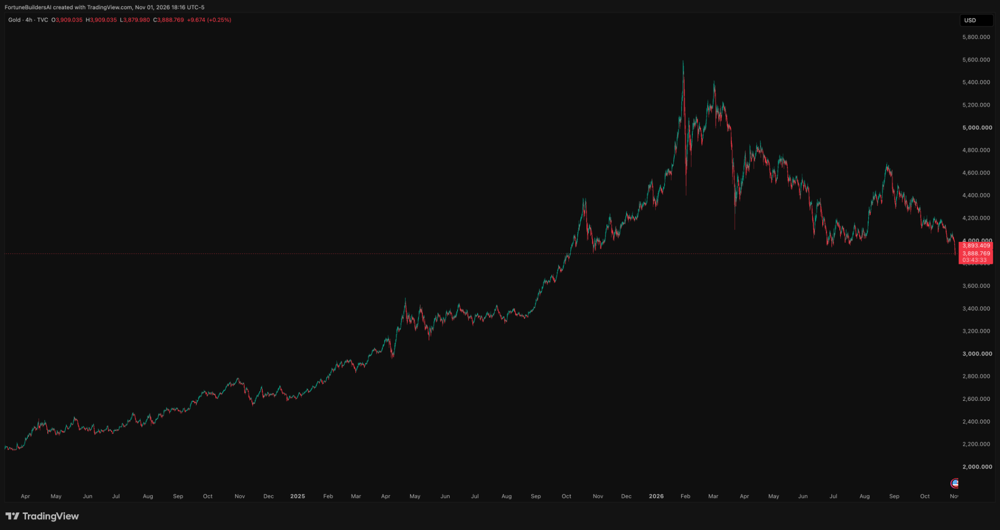

BAJISTA
La estructura reciente es descendente y el precio de referencia está por debajo de 3,960. La inflación y las tasas siguen elevadas.
La caída continúa por debajo de la zona de USD 3,960. Esta semana, el informe de empleo de Estados Unidos puede acelerar el movimiento o provocar un rebote.
Preparado el 1 de noviembre de 2026. Análisis general, no una señal.
La estructura reciente es descendente y el precio de referencia está por debajo de 3,960. La inflación y las tasas siguen elevadas.
Una vela de 4 horas cerrando por encima nos llevaría a revisar el sesgo bajista. No confirmaría por sí sola una tendencia alcista.
Viernes 6 · 8:30 a. m. Miami y Colombia. La creación de empleo, el desempleo y los salarios pueden generar volatilidad.
La dirección bajista coincidió con la caída observada. La confirmación exigida necesita verificarse.
Lo que dijimos: la lectura era bajista, con 3,960 como soporte y 4,080 como nivel para revisar el sesgo. El escenario base contemplaba presión con rebotes dentro de ese rango.
Lo que pasó: la referencia pasó de USD 3,988.712 el 25 de octubre a USD 3,888.769 el 1 de noviembre, aproximadamente un 2.5% menos y por debajo de 3,960.
Conclusión: la dirección general fue bajista, pero el precio salió por debajo del rango previsto. La captura más reciente no permite verificar por sí sola cuándo ocurrió un cierre de 4 horas bajo 3,960, así que esa confirmación queda pendiente.
Referencias aproximadas para interpretar el mercado, no órdenes ni objetivos garantizados.

Captura proporcionada · 1 de noviembre, 6:16 p. m. Miami. La última vela todavía se estaba formando; el nivel mostrado puede cambiar.
Si una vela de 4 horas cierra por encima, revisaríamos la lectura bajista. USD 4,000 sería la siguiente referencia redonda.
Franja de observación. El mínimo de 3,879.980 corresponde a la vela en formación de la captura, no a un soporte confirmado.
Una vela de 4 horas cerrando por debajo del mínimo observado mantendría la atención en la presión bajista. Esperar la reacción del precio.
Ambas ciudades comparten horario esta semana. Los datos pueden provocar movimientos rápidos.
Mide la actividad industrial. Una sorpresa puede modificar las expectativas sobre crecimiento y tasas.
Ofrece una señal sobre el sector de servicios. Observa cómo reaccionan el dólar, los bonos y el oro.
Nóminas, desempleo y salarios pueden cambiar las expectativas sobre tasas. Espera la reacción, que no siempre coincide con el primer movimiento.
Martes 3: vacantes laborales JOLTS a las 10:00 a. m. · Miércoles 4: empleo privado ADP a las 8:15 a. m. Consulta la agenda oficial antes de operar.
Cuando exista una actualización revisada, aparecerá aquí con su fecha y hora.
Dos formas de acompañar tu lectura del mercado.

Organiza tu análisis en TradingView con referencias visuales de entrada, riesgo y objetivos.

Analiza el mercado con un mentor y conoce el proceso detrás de la metodología Kill Zone + Liquidez.
La dirección es una interpretación educativa basada en información disponible al momento de publicación. Los niveles indican cuándo revisar el escenario, no garantizan el comportamiento del mercado. Cada usuario decide si opera y administra su propio riesgo.
El 28 de octubre la Reserva Federal mantuvo su tasa objetivo en 3.75%–4.00%. El 29 de octubre, el PIB real del tercer trimestre mostró un crecimiento anualizado preliminar de 3.4% y la inflación PCE de septiembre fue de 3.6% interanual. Estos datos aportan contexto; no prueban por sí solos la causa del movimiento del oro.